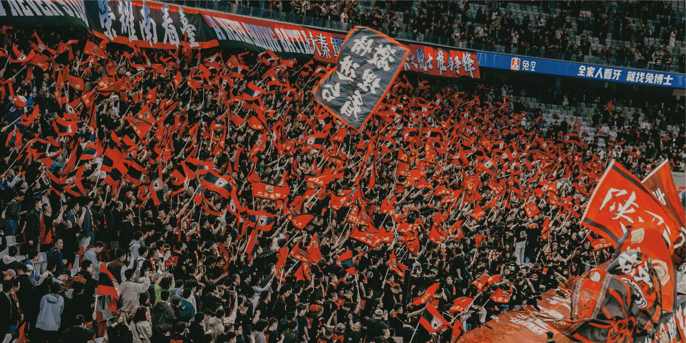
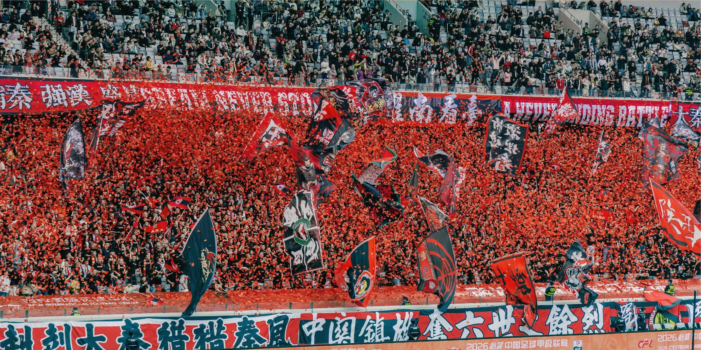
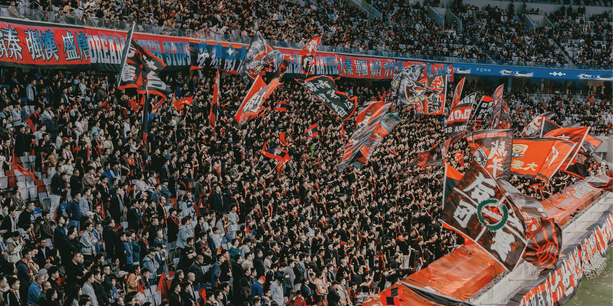
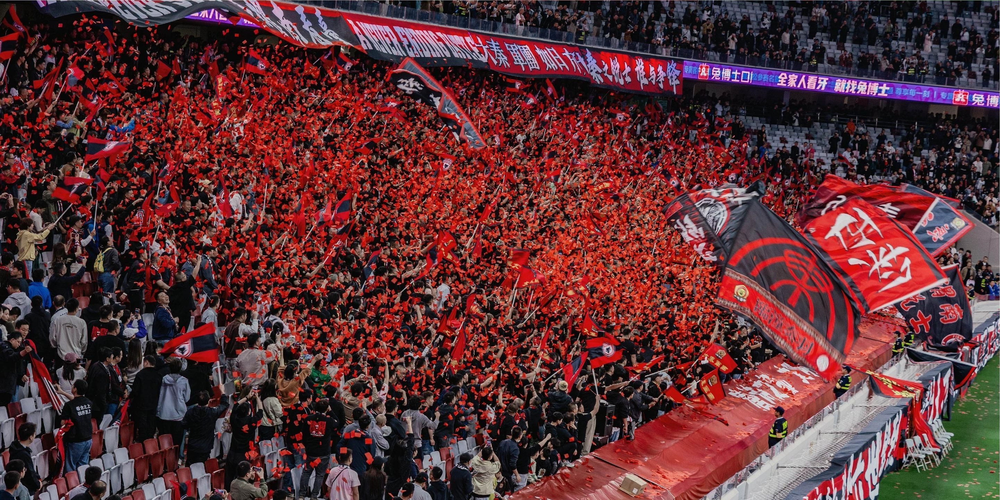
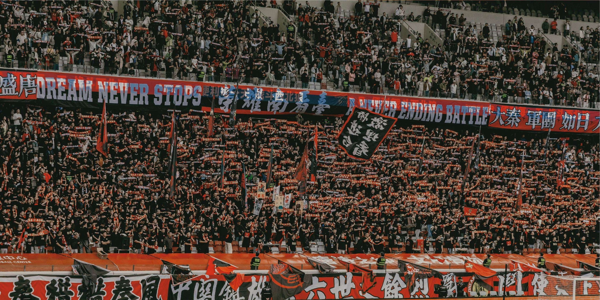
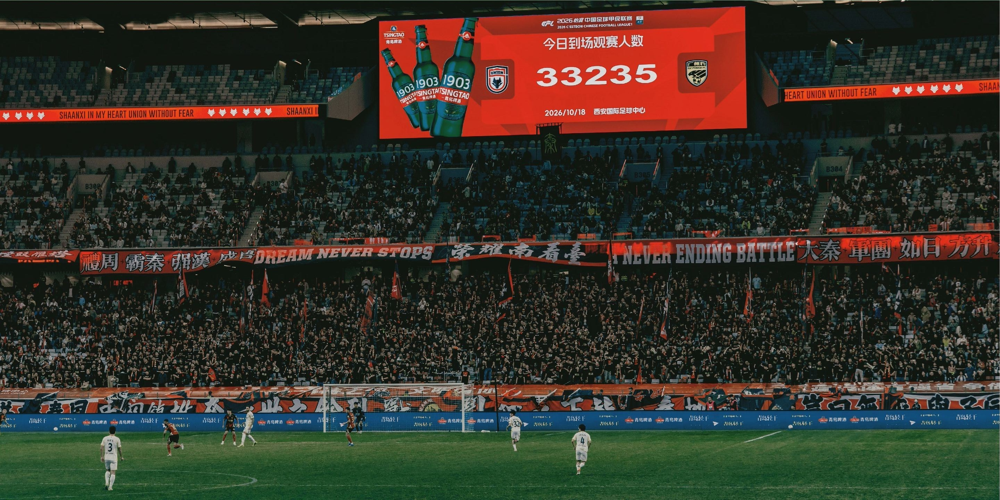

Gallery · 战地影像
声浪所至，皆为阵地
口号是我们的战歌，影像是我们的战报。这一页留给每一场战斗的余温。
From The Stands · 看台战报
照片会老，火种不会
旗帜、横幅、TIFO 与灯火的每一帧，都来自南郊势力自己的看台。影像持续征集中，欢迎组员投稿补录。

NO.01
NO.02
NO.03
NO.04
NO.05
NO.06Away Days · 远征足迹
球队到哪，旗打到哪
远征不问路途，只问座位在哪。大部队列队展开战旗的那一刻，客队就知道：南郊的人来了。


Anthem · 战歌
开唱之前，先学会吼
南郊势力战歌，现场版——戴上耳机，音量拉满，这就是我们看台的声音。